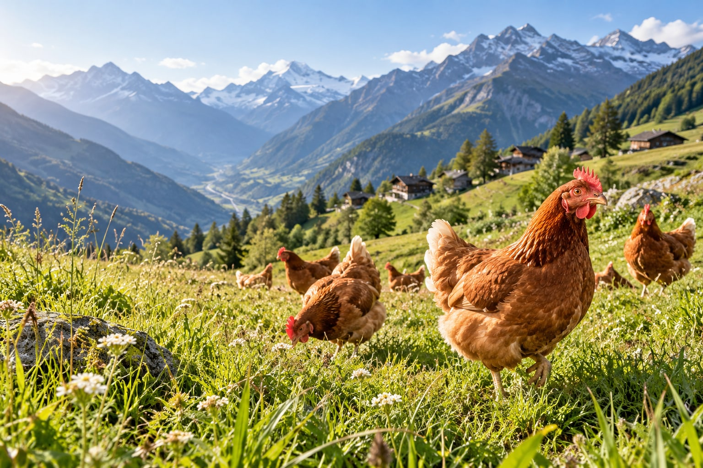
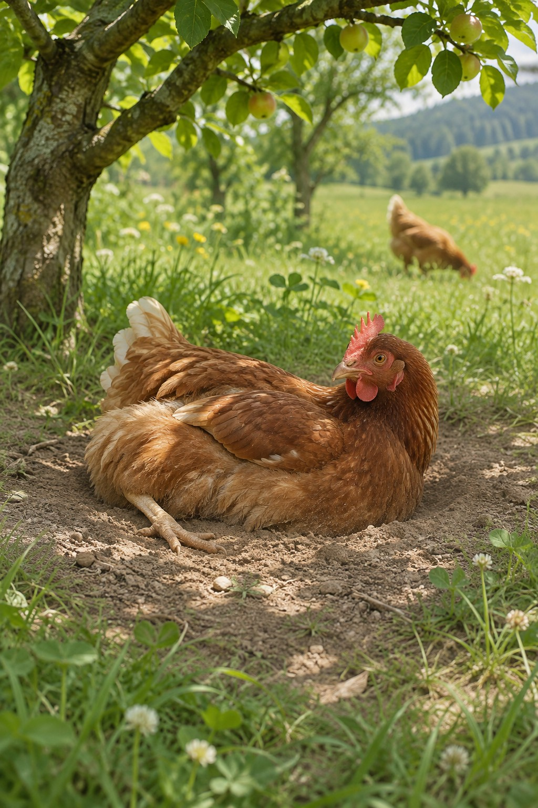
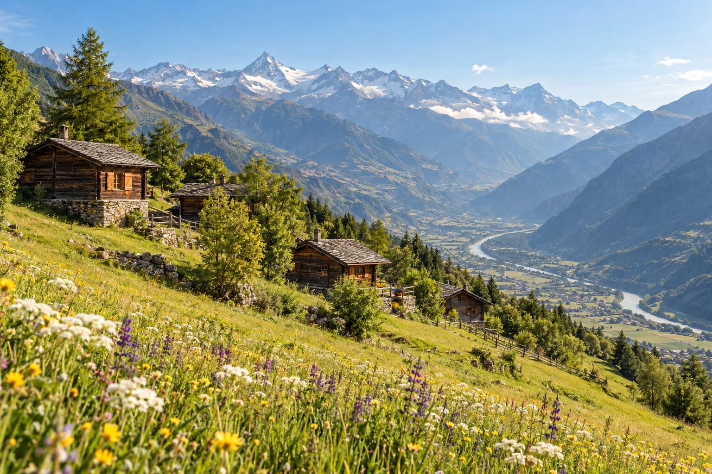
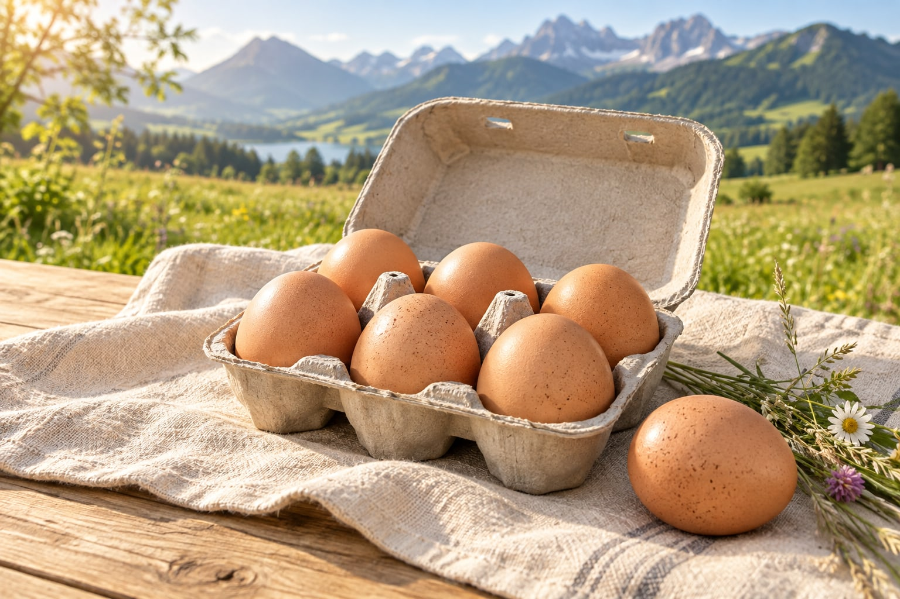

Gute Eier.
Gutes Leben.
Ein kleines Stück Wallis.
Und ganz viel gutes Hühnerleben.
Unsere Bio-Freilandhennen geniessen viel Auslauf im Bergdorf Ausserberg. Denn für uns beginnt ein richtig gutes Ei mit dem Wohl des Tieres.

Ausserberg, Wallis
Jeden Hühner-Tag.
Erst das Huhn.
Dann das Ei.
Gute Eier sind für uns mehr als ein Lebensmittel. Sie sind das Ergebnis einer Haltung, bei der das Tier an erster Stelle steht.
Platz für ein natürliches Hühnerleben
Scharren, picken, entdecken. Mit viel Auslauf können unsere Hennen ihrem natürlichen Verhalten nachgehen.
Bio aus Überzeugung
Unsere Hennen leben in Bio-Freilandhaltung. Achtsamkeit gegenüber Tier und Natur gehört für uns zusammen.
Tierwohl vor allem anderen
Wir möchten, dass es unseren Hennen richtig gut geht. Ihr Wohlbefinden bestimmt unser Handeln – jeden Tag.

Ein Bergdorf.
Ein besonderer Ursprung.
In Ausserberg sind unsere Hennen daheim.
Hier, mitten im Wallis, entstehen Eier mit Herkunft und einer Haltung, hinter der wir stehen.
Einfach ein gutes Ei.
Für dein Frühstück. Für deinen Lieblingskuchen.
Für die kleinen, guten Momente im Alltag.

Walliser PremiumeierGuter Geschmack.
Ein gutes Gefühl.
Von Hennen mit viel Auslauf. Aus dem Bergdorf Ausserberg. Mit Tierwohl als wichtigster Zutat.
- Bio-Freilandhaltung
- Herkunft: Ausserberg im Wallis
- Direkt bei uns anfragen
Preis und Verfügbarkeit bestätigen wir persönlich.
Ein bisschen Wallis
für dich.
Frage deine Wunschmenge ganz einfach an. Wir klären Preis, Verfügbarkeit und Übergabe persönlich mit dir.
- 1Wunschmenge wählen
Für den kleinen oder grossen Eierhunger.
- 2Anfrage per E-Mail senden
Das Formular bereitet deine Nachricht vor.
- 3Persönliche Bestätigung erhalten
Erst dann werden die Details vereinbart.
eliawidmer@hotmail.com ↗
Noch ein paar
gute Antworten.
Etwas ist noch offen? Schreib uns.
Wir freuen uns auf deine Nachricht.
Woher kommen die Walliser Premiumeier?+
Unsere Bio-Freilandhennen werden in Ausserberg gehalten, einem Bergdorf im Wallis. Dort sind unsere Eier zu Hause.
Was bedeutet Tierwohl für euch?+
Das Wohl unserer Hennen hat oberste Priorität. Viel Auslauf und Raum zum Scharren, Picken und Erkunden gehören für uns zu einem guten, natürlichen Hühnerleben.
Was kosten die Eier?+
Den Preis für deine Wunschmenge teilen wir dir mit unserer persönlichen Rückmeldung mit. Deine Anfrage über das Formular ist unverbindlich.
Wie kommen die Eier zu mir?+
Du kannst eine Abholung in Ausserberg oder eine Übergabe nach Absprache anfragen. Ort und Termin vereinbaren wir persönlich. Eine Lieferung ist damit noch nicht zugesagt.
Ist meine Anfrage schon eine feste Bestellung?+
Du bereitest zuerst eine E-Mail vor und sendest sie aus deinem Mailprogramm an uns. Wir bestätigen dir Preis, Verfügbarkeit und Übergabe persönlich. Das Absenden des Formulars allein löst keine verbindliche Bestellung aus.
Gut für die Hennen.
Gut auf deinem Tisch.